GDAL Image Formats
GeoServer can leverage the ImageI/O-Ext GDAL libraries to read selected coverage formats. GDAL is able to read many formats, but for the moment GeoServer supports only a few general interest formats and those that can be legally redistributed and operated in an open source server.
The following image formats can be read by GeoServer using GDAL:
- DTED, Military Elevation Data (.dt0, .dt1, .dt2): http://www.gdal.org/frmt_dted.html
- EHdr, ESRI .hdr Labelled: <http://www.gdal.org/frmt_various.html#EHdr>
- ENVI, ENVI .hdr Labelled Raster: <http://www.gdal.org/frmt_various.html#ENVI>
- HFA, Erdas Imagine (.img): <http://www.gdal.org/frmt_hfa.html>
- JP2MrSID, JPEG2000 (.jp2, .j2k): <http://www.gdal.org/frmt_jp2mrsid.html>
- MrSID, Multi-resolution Seamless Image Database: <http://www.gdal.org/frmt_mrsid.html>
- NITF: <http://www.gdal.org/frmt_nitf.html>
- ECW, ERDAS Compressed Wavelets (.ecw): <http://www.gdal.org/frmt_ecw.html>
- JP2ECW, JPEG2000 (.jp2, .j2k): http://www.gdal.org/frmt_jp2ecw.html
- AIG, Arc/Info Binary Grid: <http://www.gdal.org/frmt_various.html#AIG>
- JP2KAK, JPEG2000 (.jp2, .j2k): <http://www.gdal.org/frmt_jp2kak.html>
Installing GDAL extension
From GeoServer version 2.2.x, GDAL must be installed as an extension. To install it:
-
Visit the website download page, locate your release, and download:
gdalWarning
Ensure to match plugin (example 2.24.1 above) version to the version of the GeoServer instance.
-
The download link for GDAL will be in the Extensions section under Coverage Format.
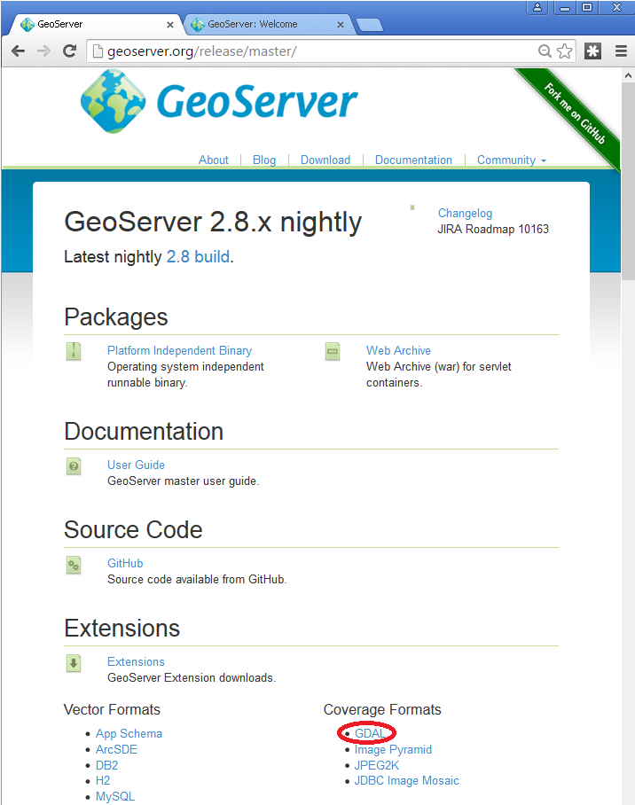
- Extract the files in this archive to the
WEB-INF/libdirectory of your GeoServer installation. On Windows You may be prompted for confirmation to overwrite existing files, confirm the replacement of the files
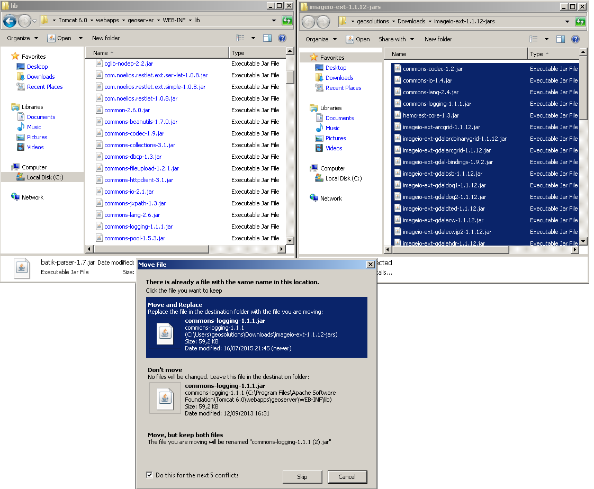
Moreover, in order for GeoServer to leverage these libraries, the GDAL (binary) libraries must be installed through your host system's OS. Once they are installed, GeoServer will be able to recognize GDAL data types. See below for more information.
Installing GDAL native libraries
Starting with GeoServer 2.21.x the imageio-ext plugin is tested with GDAL version 3.x (tested in particular with 3.2.x and 3.4.x).
The imageio-ext plugin is tested with the GDAL 3.2 SWIG bindings, included in the extension download as gdal-3.2.0.jar.
In case of version mismatch
We recommend matching the version gdal jar to the version of gdal available in your environment:
GDAL 3.4.1, released 2021/12/27
If you are using a version of GDAL that does not match the one expected by GeoServer, you can go and replace the gdal-3.2.0.jar file with the equivalent java binding jar (typically named either gdal-<version>.jar) included with your GDAL version:
- If your GDAL version does not include a bindings jar, it was probably not compiled with the java bindings and will not work with GeoServer.
- You may also search for the correct
gdaljar here: https://search.maven.org/artifact/org.gdal/gdal
Windows packages and setup
For Windows, gisinternals.com provides complete packages, with Java bindings support, in the release-<version>-GDAL-<version>-mapserver-<version>.zip packages (the GDAL binary downloads at the time of writing do not include Java support).
Unpack the zip file in a suitable location, and then set the following variables before starting up GeoServer:
set PATH=%PATH%;C:\<unzipped_package>\bin;C:\<unzipped_package>\bin\gdal\java
set GDAL_DRIVER_PATH=C:\<unzipped_package>\bin\gdal\plugins
set GDAL_DATA=C:\<unzipped_package>\bin\gdal-data
There are a few optional drivers that you can find in [file:C:\](file:%60C:\)<unzipped_package>bingdalplugins-extra and C:<unzipped_package>bingdalplugins-optional. Include these paths in `GDAL_DRIVER_PATH enables the additional formats.
Warning
Before adding the extra formats please make sure that you are within your rights to use them in a server environment (some packages are specifically forbidden from free usage on the server side and require a commercial licence, e.g., ECW).
Note
Depending on the version of the underlying operating system you will have to pick up the right one. You can google around for the one you need. Also make sure you download the 32 bit version if you are using a 32 bit version of Windows or the 64 bit version (has a "-x64" suffix in the name of the zip file) if you are running a 64 bit version of Windows. Again, pick the one that matches your infrastructure.
Note on running GeoServer as a Service on Windows
Deploying the GDAL ImageI/O-Ext native libraries in a location referred by the PATH environment variable (like, as an instance, the JDK/bin folder) will not allow the GeoServer service to use GDAL. As a result, during the service startup, GeoServer log will likely report the following message:
it.geosolutions.imageio.gdalframework.GDALUtilities loadGDAL
WARNING: Native library load failed.java.lang.UnsatisfiedLinkError: no gdaljni in java.library.path
Taking a look at the jsl74.ini configuration file available inside the GeoServer installation , there is this useful entry:
;The java command line
;The entry method below using a parameter list still works but the command line variant is more convenient.
;Everything separated by whitespace on a java command line is broken down into a parameter here.
;You don't need to care about quotes
;around strings containing spaces here. e.g.
cmdline = -cp "..\src" com.roeschter.jsl.TelnetEcho
To allow the GDAL native DLLs to be loaded:
- Edit the command line to include
-Djava.library.pathwith the location of your GDAL libraries.
Linux packages and setup
For common LTS Linux distribution there are packages for GDAL and the associated Java bindings, e.g., on Ubuntu and derivatives you can install them using:
sudo apt-get install gdal-bin libgdal-java
The libraries as installed above are already in the search path, so no extra setup is normally needed. In case setting up the GDAL_DATA is required to handle certain projections, it's normally found in /usr/share/gdal/<version>, so you can execute the following prior to start GeoServer, e.g:
export GDAL_DATA=/usr/share/gdal/<version>
In case you decide to build from sources instead, remember to run configure with --with-java, and after the main build and install, get into the swig/java and run a build and install there. For more information about building GDAL see:
After the build and installation, export the following variables to make GeoServer use the GDAL custom build:
export LD_LIBRARY_PATH=/<path_to_gdal_install>/lib
export GDAL_DATA=/<path_to_gdal_install>/share/gdal
Testing the installation
Once these steps have been completed, restart GeoServer.
Navigate to About > Server Status page, and change to the Modules tab, and click **** link for status information.
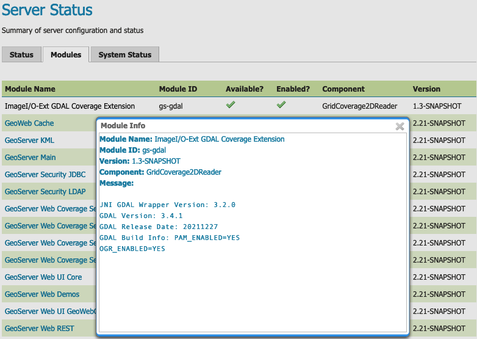
ImageI/O GDAL Coverage Extension Module StatusThis information can be used to verify that the extension is active, the version of GDAL used, and the version of the SWIG bindings used.
If all the steps have been performed correctly, new data formats will be in the Raster Data Sources list when creating a new data store in the Stores section as shown here below.
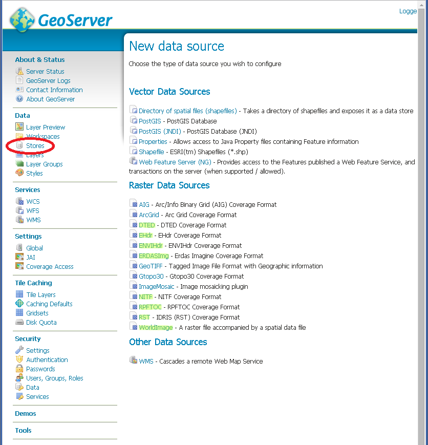
GDAL image formats in the list of raster data storesIf new formats do not appear in the GUI and you see the following message in the log file:
it.geosolutions.imageio.gdalframework.GDALUtilities loadGDAL WARNING: Native library load failed.java.lang.UnsatisfiedLinkError: no gdaljni in java.library.path WARNING: Native library load failed.java.lang.UnsatisfiedLinkError: no gdalalljni in java.library.path*
This means that the extension was installed, bu twas not able to access your gdal library for some reason.
Configuring a DTED data store
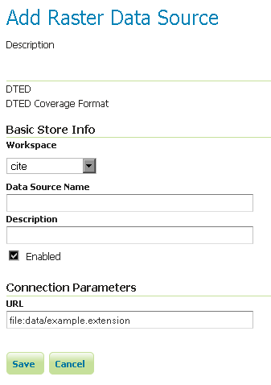
Configuring a DTED data storeConfiguring a EHdr data store
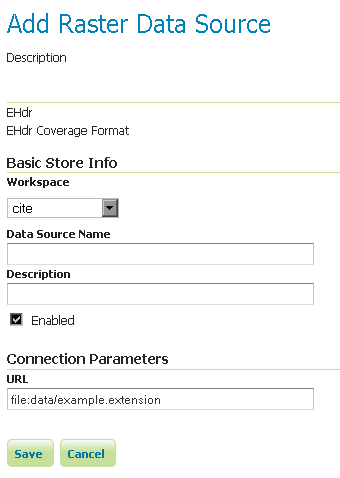
Configuring a EHdr data storeConfiguring a ERDASImg data store
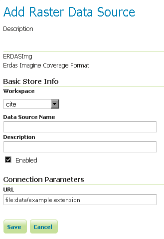
Configuring a ERDASImg data storeConfiguring a JP2MrSID data store
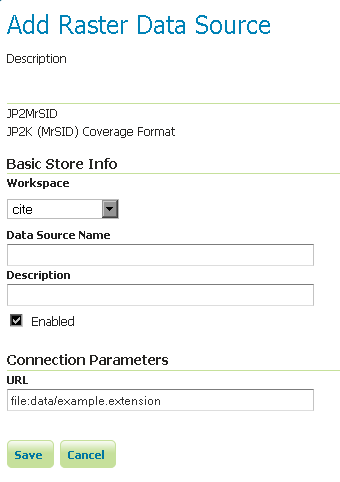
Configuring a JP2MrSID data storeConfiguring a NITF data store
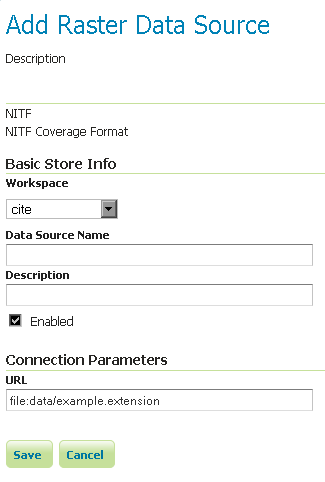
Configuring a NITF data storeSupporting vector footprints
Starting with version 2.9.0, GeoServer supports vector footprints. A footprint is a shape used as a mask to hide those pixels that are outside of the mask, hence making that part of the parent image transparent. The currently supported footprint formats are WKB, WKT and Shapefile. By convention, the footprint file should be located in the same directory as the raster data that the footprint applies to.
Note
In the examples of this section and related subsections, we will always use .wkt as extension, representing a WKT footprint, although both .wkb and .shp are supported too.
For example, supposing you have a MrSID file located at /mnt/storage/data/landsat/N-32-40_2000.sid to be masked, you just need to place a WKT file on the same folder, as /mnt/storage/data/landsat/N-32-40_2000.wkt Note that the footprint needs to have same path and name of the original data file, with .wkt extension.
This is how the sample footprint geometry looks:
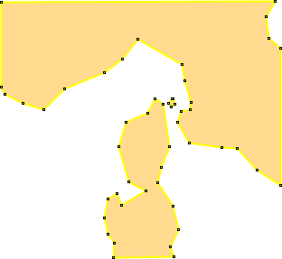
A sample geometry stored as WKT, rendered on OpenJumpOnce footprint file has been added, you need to change the FootprintBehavior parameter from None (the default value) to Transparent, from the layer configuration.
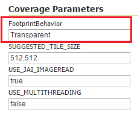
Setting the FootprintBehavior parameterThe next image depicts 2 layer previews for the same layer: the left one has no footprint, the right one has a footprint available and FootprintBehavior set to transparent.
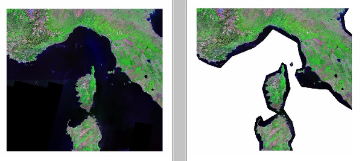
No Footprint VS FootprintBehavior = TransparentExternal Footprints data directory
As noted above, the footprint file should be placed in the same directory as the raster file. However in some cases this may not be possible. For example, the folder containing the raster data may be read only.
As an alternative, footprint files can be located in a common directory, the footprints data directory. The subdirectories and file names under that directory must match the original raster path and file names. The footprints data directory is specified as a Java System Property or an Environment Variable, by setting the IR property/variable to the directory to be used as base folder.
Example
Suppose you have 3 raster files with the following paths:
/data/raster/charts/nitf/italy_2015.ntf/data/raster/satellite/ecw/orthofoto_2014.ecw/data/raster/satellite/landsat/mrsid/N-32-40_2000.sid
They can be represented by this tree:
/data
\---raster
+---charts
| \---nitf
| italy_2015.ntf
|
\---satellite
+---ecw
| orthofoto_2014.ecw
|
\---landsat
\---mrsid
N-32-40_2000.sid
In order to support external footprints you should
- Create a
/footprints(as an example) directory on disk - Set the
FOOTPRINTS_DATA_DIR=/footprintsvariable/property. - Replicate the rasters folder hierarchy inside the specified folder, using the full paths.
-
Put the 3 WKT files in the proper locations:
-
/footprints/data/raster/charts/nitf/italy_2015.wkt /footprints/data/raster/satellite/ecw/orthofoto_2014.wkt/footprints/data/raster/satellite/landsat/mrsid/N-32-40_2000.wkt
Which can be represented by this tree:
/footprints
\---data
\---raster
+---charts
| \---nitf
| italy_2015.wkt
|
\---satellite
+---ecw
| orthofoto_2014.wkt
|
\---landsat
\---mrsid
N-32-40_2000.wkt
Such that, in the end, you will have the following folders hierarchy tree:
+---data
| \---raster
| +---charts
| | \---nitf
| | italy_2015.ntf
| |
| \---satellite
| +---ecw
| | orthofoto_2014.ecw
| |
| \---landsat
| \---mrsid
| N-32-40_2000.sid
|
\---footprints
\---data
\---raster
+---charts
| \---nitf
| italy_2015.wkt
|
\---satellite
+---ecw
| orthofoto_2014.wkt
|
\---landsat
\---mrsid
N-32-40_2000.wkt
Note the parallel mirrored folder hierarchy, with the only differences being a /footprints prefix at the beginning of the path, and the change in suffix.